|
Plugin Objetos |
|
El plugin de Objetos es
parte de la solución UML para la realización de diagramas según la
especificación UML 2.0 . Este diagrama permite modelar una
serie de objetos y sus relaciones en un algún momento del tiempo. Los elementos propios que maneja este diagrama son:
Creación de un nuevo Diagrama de Objetos Colosoft
soporta el Plugin Clases mediante la creación de un nuevo diagrama de
Clases. Se ingresan los datos correspondientes al diagrama 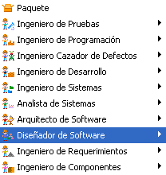 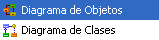 Figura 1. Creación de un diagrama de objetos Barra de herramientas del Plugin de Objeto 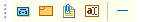 Figura 2. Barra de herramientas del plugin Objeto: Es el elemento clave de este diagrama, un objeto es una instancia de alguna clase en algún momento en tiempo de ejecución. Figura 3. Creación de un objeto Aparece una
ventana de especificación de un
Objeto, como se muestra en la Figura 4, que permite asignarle
un nombre y una clase de la cual toma las propiedades. Para
asignarle una clase preexistente o agregarle atributos y operaciones al
actor es necesario que al menos un diagrama de clases se encuentre
activo en el marco de expresión. Figura 4. Datos generales del objeto Seleccione una Clase existente de la lista deplegable Clase o si lo requiere cree una Nueva Clase haciendo clic en Nueva Clase. Nueva Clase E: la ventana de creación de nueva clase permite escribir el nombre de una nueva clase y seleccionan los diagramas en los cuales esta nueva clase estara contenida. Para especificar las propiedades de la nueva clase, se hace clic en editar, aparece la ventana de especificación de una clase. 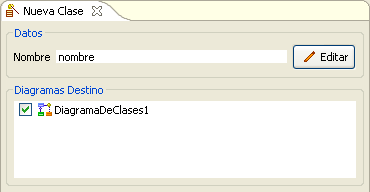 Figura 5. Clase plantilla para el objeto Para más información sobre las especificación de una clase nueva, vea Diagrama de Clases. Si se decide tomar una clase como plantilla para el objeto, se deberá especificar como se debe tomar la Fuente de Características, bien sea como clase, objeto o combinado. Como clase el objeto en el diagrama tomará los atributos y las operaciones de la clase plantilla, mientras que como objeto solo generará la asociación a ese tipo sin tomar sus atributos ni operaciones. 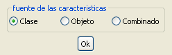 Figura 6. Fuente de características del objeto El objeto recien creado luce como sigue: 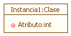 Figura 7. Representación del objeto Enlace entre objetos: Son interpretados en este contexto como instancias de las asociaciones en el diagrama de clases, una asociación entre clases estara presente en el diagrama de objetos como instancia especifica de esta. Para crear un nuevo enlace entre objetos, haga clic sobre el icono asociación y luego haga clic en alguno de los objetos de la relación, haga clic en el segundo objeto. Figura 8. Creación de un enlace Aparece la ventana de Especificación de la Asociación para Objeto, Especifique el Estereotipo del enlace o seleccionelo de entre los predeterminados de la lista desplegable. 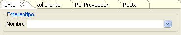 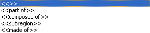 Figura 9. Esterotipos para la relación entre objetos En la segunda pestaña "Rol Cliente" y en la tercer pestaña "Rol Proveedor" se especifican los atributos del objeto cliente o Proveedor (según la dirección de la relación) de acuerdo al rol especifico que estos tomen en la relación. Las características para los atributos de un rol son:
Para editar un Rol existente se escribe en el campo Nombre el mismo asociado al rol que se quiere modificar. 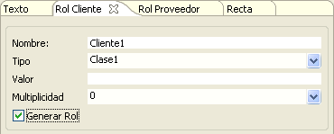 Figura 10. Rol de cliente en la relación entre objetos También es editable la visibilidad correspondiente al rol : Publico, Protegido o privado. 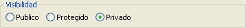 Figura 11. Visibilidad del rol Los modificadores asociados al rol son los mismos que para los atributos: Transiente, Final, Volátil, Mutable. y su alcance Clasificador o Instancia. 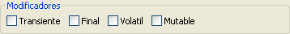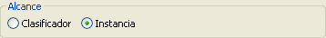 Figura 12. Modificadores y alcances para la relación En el apartado Rol se listaran los diferentes atributos que han sido creados por los roles para la clase Cliente o Proveedor (respectivamente) dentro del diagrama y que pueden ser seleccionados (estar presentes como atributos de la clase). *Nota este control está asociado a la Clase y no a la relación, por lo tanto los roles que se activen o desactiven afectaran a la clase directamente sin importar la relación desde la que se editen. Algunos roles no serán visibles en la lista dependiendo del tipo de relación a la que pertenecen. 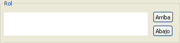 Figura 13. Descripción del rol de la relación El enlace recien creado luce como sigue: 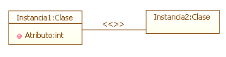 Figura 14. Representación de dos objetos con una relación |